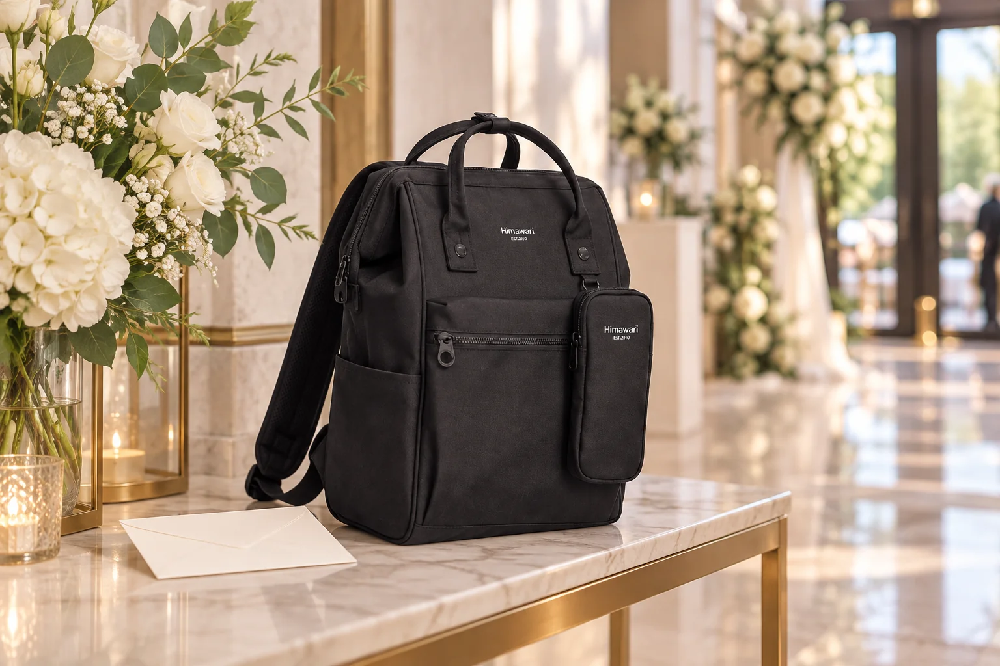

결혼식 하객의 백팩: 접수대부터 식사 자리까지

결혼식에 참석하는 날에는 식장에 도착해서 접수하고, 예식을 보고, 식사 장소로 옮기는 동안 소지품을 여러 번 확인하게 됩니다. 평소처럼 백팩을 메고 갔다면 의자 옆에 무심코 내려놓기 전에 행사장 동선을 먼저 살펴보세요. 예식장마다 보관 서비스와 반입 안내가 다르고, 혼잡한 시간대에는 작은 가방도 통로를 막을 수 있습니다. 옷차림의 정답을 정하기보다 내가 가져온 물건을 잃지 않고 다른 사람의 이동에도 방해되지 않게 다루는 데 초점을 둡니다.
출발 전, 꼭 들고 갈 물건을 따로 셉니다
초대장이나 모바일 안내, 휴대전화, 지갑처럼 현장에서 바로 확인할 물건과 예식 내내 꺼내지 않을 물건을 나눠보세요. 겉옷을 가져간다면 가방 안에 억지로 밀어 넣을지보다 행사장에 맡길 수 있는지, 맡긴다면 어떻게 찾는지를 확인하는 편이 낫습니다. 행사장 안내가 명확하지 않다면 현장에서 직원에게 물어보세요. 가방 안에 넣은 봉투나 서류는 구겨지지 않을 자리인지도 출발 전에 확인합니다.
접수대 앞에서는 통로를 먼저 비웁니다
사람이 몰린 접수대 앞에서 백팩을 크게 열어 물건을 찾기 시작하면 뒤의 줄이 멈춥니다. 필요한 안내와 연락 수단은 들어가기 전에 꺼낼 준비를 하고, 줄에서는 가방의 지퍼가 닫혔는지만 확인하세요. 접수 절차와 선물 전달 방식은 초대받은 행사 안내에 따릅니다. 개인 정보가 적힌 물건이나 귀중품은 다른 사람이 볼 수 있는 열린 주머니에 오래 두지 않습니다.
예식 중에는 의자와 통로 사이를 살핍니다
가방을 바닥이나 빈 의자에 둘 수 있는지는 현장 안내와 좌석 간격에 따라 달라집니다. 어깨에서 내리기 전 주변 사람이 지날 공간이 있는지 살피고, 놓았다면 끈이 통로 쪽으로 길게 나오지 않도록 정리하세요. 잠깐 자리를 비울 때는 귀중품을 가방에 넣어 둔 채 두고 가는 방식에 의존하지 않습니다. 행사장에 별도 보관 서비스가 있다면 이용 조건과 물품 확인 방법을 직접 확인합니다.
식사 장소로 옮길 때 한 번 다시 챙깁니다
예식이 끝나면 인사와 이동이 이어져 가방을 둔 위치를 잊기 쉽습니다. 떠나기 전 휴대전화, 겉옷, 백팩이 모두 있는지 짧게 확인하세요. 식사 자리에서는 음식이나 음료가 닿지 않을 위치에 가방을 놓고, 다른 사람의 발이나 의자 움직임에 걸리지 않게 합니다. 가방을 멋으로 전시하기보다 자신의 물건을 차분히 관리하는 것이 이 날에는 더 실용적입니다.
연출 사진의 장소는 실제 서비스 안내가 아닙니다
대표 사진은 실제 Himawari No.1027 블랙 제품을 참조해 가상의 예식장 로비 장면으로 만든 AI 이미지입니다. 사진 속 선반은 예식장의 보관 서비스나 가방 반입 허용을 보증하지 않습니다. 실제 방문할 행사장의 시설과 안내를 우선하고, 가방의 기능이나 용량은 해당 제품 정보에서 확인하세요.
참고·안내
- Himawari No.1027 제품 정보
- 실제 Himawari No.1027 블랙 제품 원본을 참조한 AI 예식장 연출 이미지입니다. 초대장과 장소는 소품이며 실제 행사장 서비스 사진이 아닙니다.
자주 묻는 질문
예식장에 백팩 보관소가 있나요?
장소마다 다릅니다. 방문 전 행사장 안내를 확인하거나 현장에서 직원에게 문의하세요.
잠시 식사하러 이동할 때 가방을 좌석에 두어도 되나요?
분실 위험이 있으므로 귀중품과 가방을 직접 챙기거나 행사장이 안내한 보관 방식을 이용하는 편이 좋습니다.